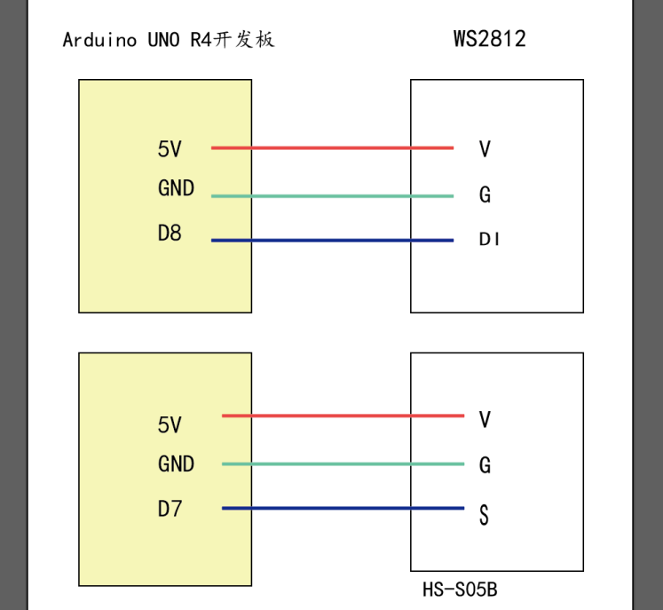
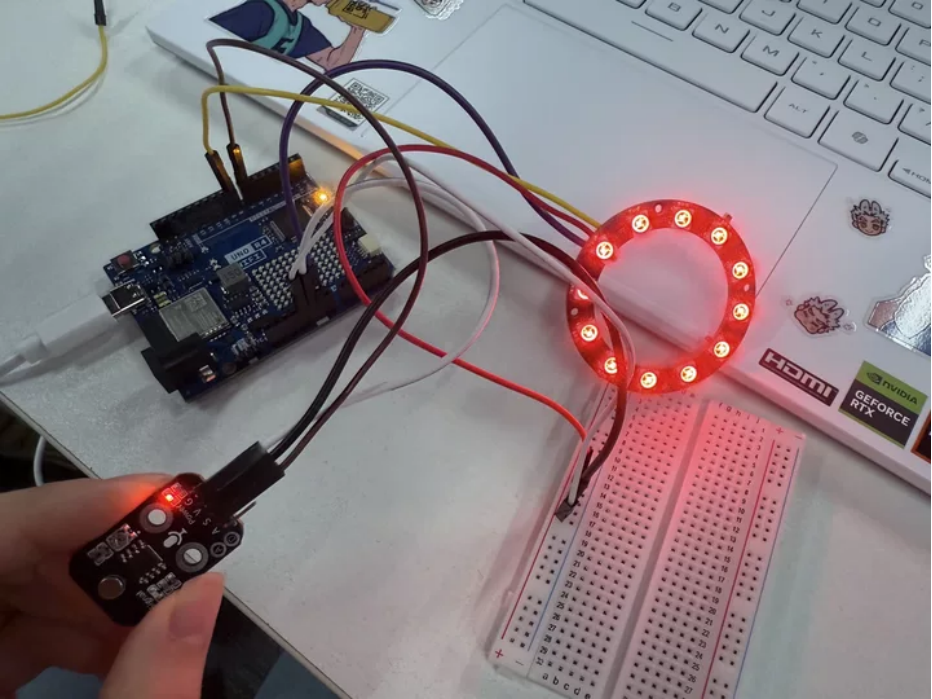
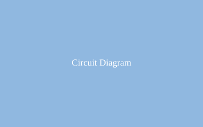
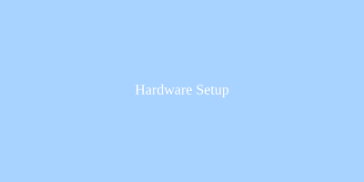
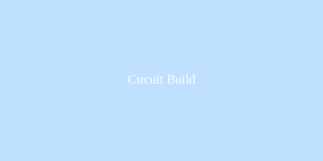
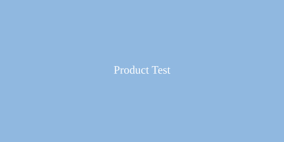

Arduino 硬件分析与智能灯光控制
✅ 作业清单
- 硬件选型与采购（WS2812灯环、HS-S05B超声波传感器、Arduino 板）
- 电路连接与调试
- Arduino 代码编写（传感器数据读取）
- 灯效控制与距离测量功能测试
- 整体封装与展示视频拍摄
🎯 最终成果展示
🔧 运用到的 Arduino 硬件分析
1. WS2812灯环
WS2812灯环是将多颗可寻址LED集成于一体的环形RGB灯板，每颗灯珠内置驱动芯片，仅需一根信号线即可独立控制每颗灯珠的任意颜色和亮度。使用时将VCC接5V、GND接地、DIN接Arduino的数字引脚，配合NeoPixel库即可轻松实现跑马灯、呼吸灯等炫彩效果。常用于指示灯、氛围灯、创意装饰及互动灯光项目中。

图1：Arduino 与 WS2812、HS-S05B 连接示意图
2. HS-S05B超声波传感器
HS-S05B超声波传感器通过发射40kHz超声波并检测回波来测量物体距离，非接触、精度高、成本低。使用时Trig引脚发送一个10μs高电平触发测量，Echo引脚输出高电平宽度对应距离值，通过Arduino的pulseIn()函数即可计算出距离（单位厘米）。常用于避障机器人、智能车位检测、倒车雷达及液位测量等场景。

图2：传感器与 Arduino 连接实物图
应用场景展示
通过WS2812灯环实现炫彩灯光效果，配合超声波传感器测量距离实现互动灯光控制。装置可用于创意装饰、智能感应灯、互动展示等场景，根据距离变化动态调整灯光颜色和亮度。

图3：完整电路连接示意图
图4：智能灯光装置成品展示
🔨 制作过程记录
📌 第一步：硬件准备
采购 Arduino Uno 开发板、WS2812灯环、HS-S05B超声波传感器、面包板及杜邦线若干。

📌 第二步：电路搭建
按照电路图连接各模块：WS2812灯环的VCC接5V、GND接地、DIN接数字引脚D8；HS-S05B超声波传感器的VCC接5V、GND接地、Trig接D7、Echo接D6。

📌 第三步：代码编写
编写 Arduino 代码实现：初始化 NeoPixel 库控制 WS2812 灯环；使用 pulseIn() 函数读取超声波传感器距离；根据距离值动态调整灯环颜色和亮度。
📌 第四步：测试与调试
逐个测试各传感器功能，调整超声波传感器的测量精度，确保灯效响应及时。遇到问题：超声波测量不稳定，通过多次测量取平均值解决。
📌 第五步：封装与展示
将电路板放入亚克力外壳，固定传感器和灯环在面板上。录制演示视频，展示距离感应控制灯光的完整功能。
